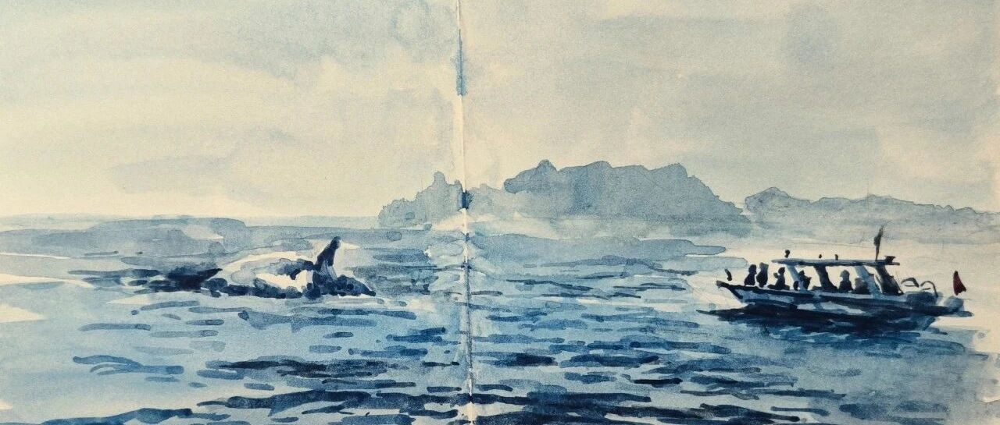

海上追鲸记
原创
LCX
LCX
PaintingDiary
2025年05月25日 18:09
北京
在小说阅读器中沉浸阅读
五一长假去广西北海涠洲岛玩耍了几天，
印象最深的就是出海追鲸啦～
之前看「星球研究所」的这期视频之后就种草了这个特别的活动：
涠洲岛观鲸
正好五一的时候民宿老板说还有鲸鱼可以看，那必须体验一把
快艇先是乘风破浪地飞冲到大海中央，然后突然就停了下来。
好几艘快艇就在海面中央静静滴等待，船长说准备好相机手机，大家就打起十二万分精神开始录像。结果什么都没有。
大海上毫无遮蔽物，在烈日和海面强烈的反光炙烤之下，十几分钟过去了，大家的精神开始涣散。
这时船长突然激动的一声大叫，如同惊雷一般："它出来啦！在船的右前方！都坐好扶好栏杆，我们要过去了！"
结果船长把速度冲到顶，周围的所有快艇都朝着同一个方向快速进发，大家的肾上腺素也开始狂飙。
一瞬间就开到了刚刚鲸鱼出没的位置，大家又开始兴奋了起来，睁大双眼、擦亮相机准备拍下历史性的瞬间。
结果鲸鱼终于在大家的期待之下，稍微露出了一丢丢光滑的后背。
这次真体会到啥叫眼神不好了，根本分不清是海浪还是鲸鱼，
只觉这鲸鱼进化得可真好，隐藏在海浪间真是一点都看不见。
（我的画也就把鲸鱼放大了两三倍吧。。。）
后来小快艇又在大海上横冲直撞追着鲸鱼跑了好远，我也终于在隔壁大姐的热心指导下看到了几次。
当看到它的背鳍，
像时钟指针一样，
在海面上
清晰滴划过一个半圆时，简直兴奋极了。
虽然只追到了一丢丢它们的背影，但这种追鲸的过程确实是令人难以忘记，很刺激也充满欢乐。
希望下次可以在春天再来一次，在鱼群繁盛，鲸鱼欢快觅食的季节再来一次～
最后给大家放一段小视频体验一下，顺便考验下各位看官的眼力。如果你在大海上，能看到鲸鱼吗
欢迎留言告诉我！也欢迎转发分享or给个"❤️"推荐，下回见！